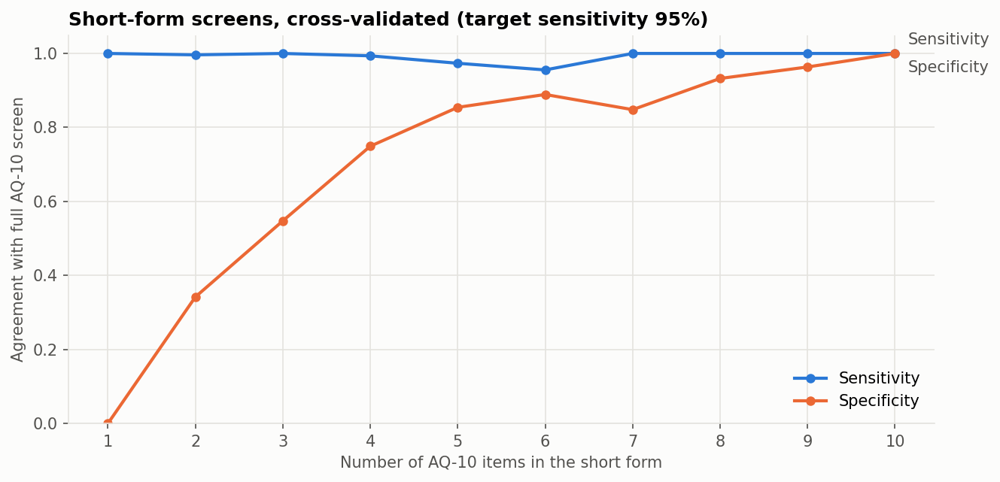

Screening · Measurement validity · Responsible AI
AQ-10 autism screening data: what machine learning can and can't learn
In the UCI Autism Screening Adult dataset, the ASD label is the questionnaire's own scoring rule in 704 of 704 records, so “predicting autism” from it is circular. The project then asks two questions the data can answer.
- Data
- UCI Autism Screening Adult; 704 AQ-10-Adult records from a screening app
- Label
- An AQ-10 screening result, not a clinical diagnosis
- Method
- Label audit; short-form cutoffs chosen inside training folds
- Status
- Research only; not a diagnostic or screening tool
The question
Many analyses of this dataset report high accuracy for “predicting autism”. Before modelling anything, a clinician would ask how the label was produced. Here the answer changes the whole project: the label is computed from the very items used as features.
So the project asks what the data can support: how short a screen can be without losing sensitivity against the full AQ-10, and whether background factors relate to a positive screen.
Data
- Source: Thabtah (2017), Autism Screening Adult, UCI Machine Learning Repository, doi.org/10.24432/C5F019, licensed CC BY 4.0.
- Records: 704 AQ-10-Adult screening records from the ASDTests app, ages 17–64.
- Who answered: 522 were self-completed, 87 were completed by a parent, relative, health care professional or other person, and 95 don't record who completed them.
1. The label is the scoring rule
| Label | Score 0–6 | Score 7–10 |
|---|---|---|
| ASD = NO | 515 | 0 |
| ASD = YES | 0 | 189 |
The label is YES exactly when the item sum is 7 or more. A depth-2 decision tree on the score reaches 100% cross-validated accuracy. Any model trained on the ten items is relearning a sum and a threshold, so the high accuracies commonly reported on this dataset aren't evidence of autism detection.
2. How short can the screen be?
The reference standard is the full AQ-10 decision. For each short-form length, items are ranked and a cutoff is chosen inside each training fold to reach at least 95% sensitivity, then applied unchanged to the held-out fold (stratified 5-fold CV ×10, 50 test folds).
Agreement with the full AQ-10 decision, by short-form length
The axis starts above zero to separate the points.
| Items | Usual cutoff | Sensitivity | Specificity | PPV | NPV |
|---|---|---|---|---|---|
| 4 | ≥ 2 | 0.994 | 0.749 | 0.594 | 0.997 |
| 5 (items 3, 4, 5, 6, 9) | ≥ 3 | 0.974 | 0.854 | 0.712 | 0.989 |
| 6 | ≥ 4 | 0.956 | 0.889 | 0.769 | 0.983 |
| 8 | ≥ 5 | 1.000 | 0.932 | 0.846 | 1.000 |
| 10 (full AQ-10) | ≥ 7 | 1.000 | 1.000 | 1.000 | 1.000 |

3. Do background factors predict a positive screen?
| Features | Mean ROC-AUC (5-fold ×10) |
|---|---|
| Age, sex, jaundice, family history, prior app use, ethnicity | 0.728 |
| The same, without ethnicity | 0.618 |
| Ethnicity only | 0.705 |
Family history of autism (47.3% vs 23.8% screen-positive) and neonatal jaundice (40.6% vs 25.4%) were associated with higher screen-positive rates. Most of the signal is ethnicity. That most plausibly reflects who used the app and cultural differences in answering self-report items: a caution about AQ-10 fairness across groups, not a usable predictor.
Limitations and appropriate use
- Not a diagnostic tool, and not clinically validated. The label is an AQ-10 screening result, not a clinical diagnosis.
- No diagnoses in the data, so the AQ-10's own sensitivity and specificity against clinical assessment can't be estimated.
- Self-selected app users with a 26.8% screen-positive rate, far above population prevalence. PPV and NPV don't transfer to clinical settings.
- No external validation of the short form. Any short form would need testing against diagnostic assessment in a new sample.
- Small ethnicity subgroups, and 95 records with ethnicity and respondent not reported. “Not reported” marks a data-collection gap, not an ethnic group.
- Not all records are self-reports by adults: 87 were completed by someone else, and 18 respondents were aged 17.
What changed from the earlier version
The earlier notebook used a synthetic 800-row Kaggle file and couldn't run top to bottom. It swapped training and test labels in one split, used a row ID as a feature, fitted encoders and SMOTE before cross-validation, and selected models by accuracy while claiming to prioritise recall. It also described an 80/20 class split as “reflecting real-world prevalence”, when adult autism prevalence is around 1–3%. It was replaced entirely.
Reproduce
python -m venv .venv
.venv\Scripts\activate # macOS/Linux: source .venv/bin/activate
pip install -r requirements.txt
pytest
jupyter nbconvert --to notebook --execute --inplace notebooks/aq10_screening_analysis.ipynb- Source code: github.com/DexterAmaning/autism-screening-prediction (MIT licence)
- Notebook: aq10_screening_analysis.ipynb
- Data provenance: data/README.md; the UCI data is included with a checksum
- Environment: Python 3.13 with pinned requirements and a pytest suite covering metrics, cutoff selection, the label rule and the data checksum
- Version described here: commit
4717273